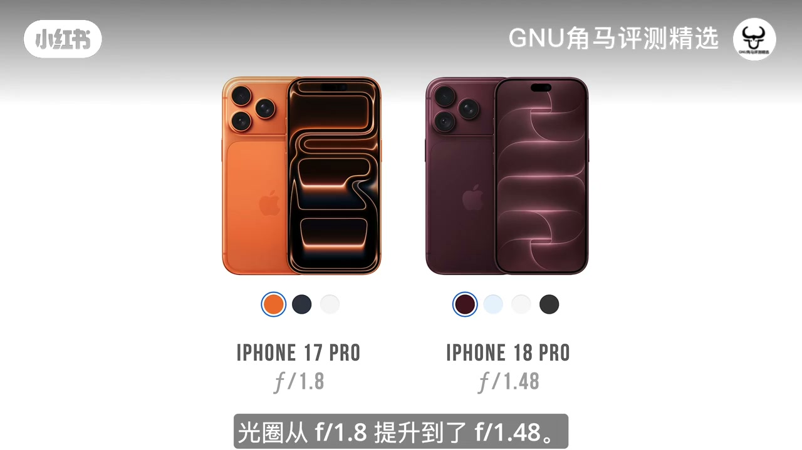
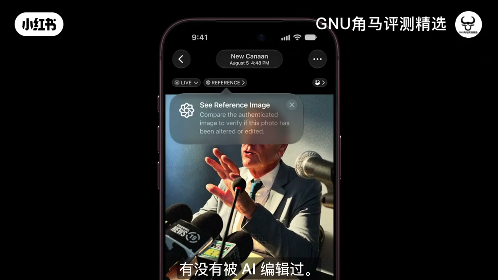
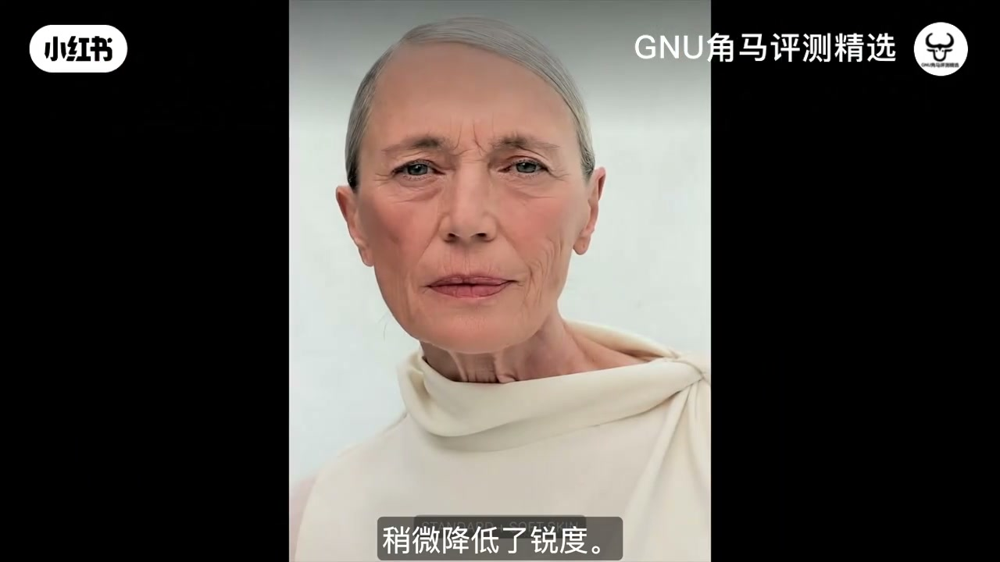

内容要点
知识结构
宣传重点常被理解反：加装光圈叶片后，既可以把最大光圈从约 f/1.8 提到 f/1.48（低光与虚化更强），也可以收小到 F4，让更多东西落在景深内——不是只会「开大虚化」。
作者最期待锁定白平衡——森林里自动白平衡常把画面染绿；另有快门/光圈优先、直方图，并吐槽拍 Apple Log 时仍缺 REC.709 预览等「给 Nerd 的细节」。
Synth ID / Apple Reference Image 用来对照原图是否被 AI 改过；色彩 ±50、柔肤、黑雾滤镜式高光、胶片颗粒等风格被他夸「抠得细」，适合当默认拍摄外观。
自称折叠爱好者：日常几乎看不见折痕，内屏 NanoTexture 抗反光；半折 Flex 像迷你三脚架，Smart Take 在对方摆姿势时自动抓拍。
拍人时被摄者可在另一块屏看自己，接近「自拍反馈」；前置像素略低可接受。预测多数创作者仍更适合 Pro / Pro Max，但 Duo 适合要创意形态的人。
18 Pro 的增量在「光可控 + 相机 App 更像专业机 + 可信影像」；Duo 的增量在「形态带来的立机与互看」，不是全面取代 Pro 线。
图文实录
开场：可变光圈到底改了什么
视频从新任 CEO John Ternus 的发布宣传切入。作者认为最有趣的是 iPhone 18 主摄加入了光圈叶片（Aperture Blades），但网上不少人把因果讲反了：不是「装了叶片就能随便开得更亮」那么简单——此前 iPhone 主摄光圈长期固定在最大开度；加装叶片之后，既可以维持更大的最大光圈，也可以把光圈收小。
硬件层面他强调两件事：最大光圈从约 f/1.8 提到约 f/1.48——对全画幅镜头用户来说相当于很贵的一档进光量，低光表现与背景虚化都会更强；同时，当你需要「什么都清楚」时，系统可以把光圈收到 F4，景深变深。他把今年上可变光圈的动机，猜测为：低光场景仍想要更大景深时，手机可以主动收小光圈。

系统相机：少切第三方，多留专业控制
WWDC 通常偏软件，但作者觉得 iPhone 相机 App 正在变「更专业」：工具仍收在底部抽屉，可上滑或点标签展开，只是工具变多了。他最期待的是手动锁定白平衡——拍视频时自动白平衡常翻车，森林场景尤其容易整屏发绿，以前只能切到第三方 App；现在能在第一方里锁住，比「永远追着自动」可靠。
他还点名闪烁速度、光圈优先、直方图等；对拍 Apple Log 的人，他希望有 REC.709 预览，并提到 Log 与 H.265 相关显示逻辑——「对 Nerd 很棒」。另有一项：可把手机剩余空间划一块给 ProRes，避免拍到一半把整机塞满。
可信影像：Reference Image 与拍摄风格直出
作者长期批评「看不出哪张片是真的」。WWDC 访谈里苹果谈到 Clean Up、Reframe、Extend 等 AI 能力，并引入 Synth ID 一类「这张照经过 AI」的标记；更进一步的是 Apple Reference Image（参考影像）：开启后进入 Reference Mode 拍摄可核验照片，之后可对照「有没有被 AI 编辑过」。他承认普通人未必天天用，但媒体与核实场景会很在意。

拍摄风格方面，他演示色彩 ±50（减饱和更「手机纪实」、加饱和更艳）、柔肤（抹掉皮肤过细纹理但仍自然）、以及类似黑雾滤镜的高光晕与红橙溢光；胶片颗粒一项他强调不是乱加噪点，而是看了影像不同颜色再铺颗粒——「做得非常好」，可当默认外观，让每次拍摄更接近电影感。
Duo：折痕、内屏与半折立机
谈完 18 Pro / Pro Max 后，他承认 Duo「有一定创意」：自己是折叠机爱好者，试过多家产品，这台铰链与折痕观感更好——尤其看电影时几乎注意不到；外屏普通，内屏 NanoTexture（他熟悉的 MacBook Pro 抗反光玻璃）展开后大屏几乎无反光。
他通常不会拿折叠机当「挂兔笼、求最锋利」的主力机，但 Duo 带来别的拍法：半折立在平面上像迷你三脚架；Smart Take 会在对方摆姿势时自动抓拍。中间一段 Whisper 出现大量重复碎片，按画面与字幕语境，对应的是半折立机 + 自动抓拍演示，而非新的口播论点。

双屏互看、前置取舍与最后选型
另一个他当场演示的功能：用主力 1X 拍别人时，对方能在另一块屏同时看到自己——接近「一边被拍一边自拍预览」，尤其让陌生人帮你拍照时更安心。他也提到可用 0.5 超广角等组合。
硬件取舍上，Duo 前摄约 12MP（对比手机上更高像素机位）分辨率更低，但他认为不必频繁依赖前摄，因为能更多使用主摄系统。完整评测尚未出炉前，他的预测是：多数创作者仍会更受益于 Pro 或 Pro Max；但有一部分人会因为 Duo 打开的形态与双屏能力而真正用起来——他自己「应该不是主力，但也想试试」。
片尾导流 Full Stack Creator 播客与频道订阅。